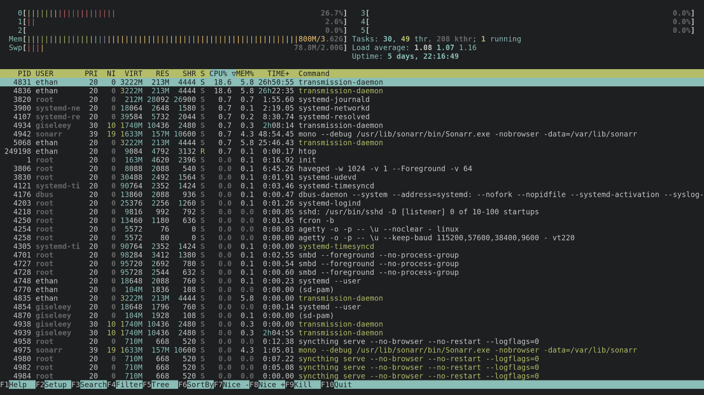

I am well versed in UNIX-like operating systems and use them on a daily basis as both workstations and fileservers.

I utilized my creative skills during the C-SPAN project by creating and editing a video on a federal policy and I had to collaborate with my group members to produce the end result.
During my job as an accountant's assistant, I didn't shy away from doing tasks that would present a challenge because it would give me more opportunities to grow and learn something new.